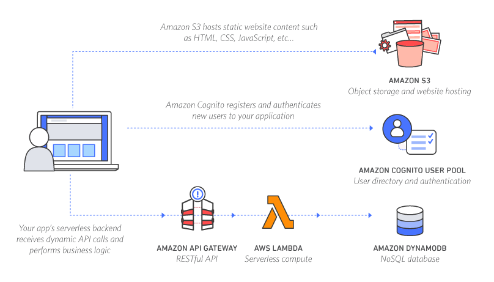

Intro to serverless applications
Using lambda functions in AWS
Thomas Lincoln
tslincoln@gmail.com
public class GetRequestHandler implements RequestHandler <String,String> {
public String handleRequest(String model, Context context) {
return model.toLowerCase();
}
}
exports.myHandler = function(event, context, callback) {
const result = model.toLowerCase();
callback(null, result);
}

| ECS/EC2 | Lambda |
|---|---|
| well understood | new and shiny |
| dedicated resource | on demand |
| continuous cost | intermittent cost |
| large scaling steps | 1:1 scale per request |
| always available | requires warm-up |
One-off projects fit into free tier
Federated login available for companies
Authorize db read/write
Setup trust between Lambda and DynamoDB
Key/value data store
Indexed by PK, or hash and sort key
Layout rest endpoints
Bind them to lambdas
Remap GET query params